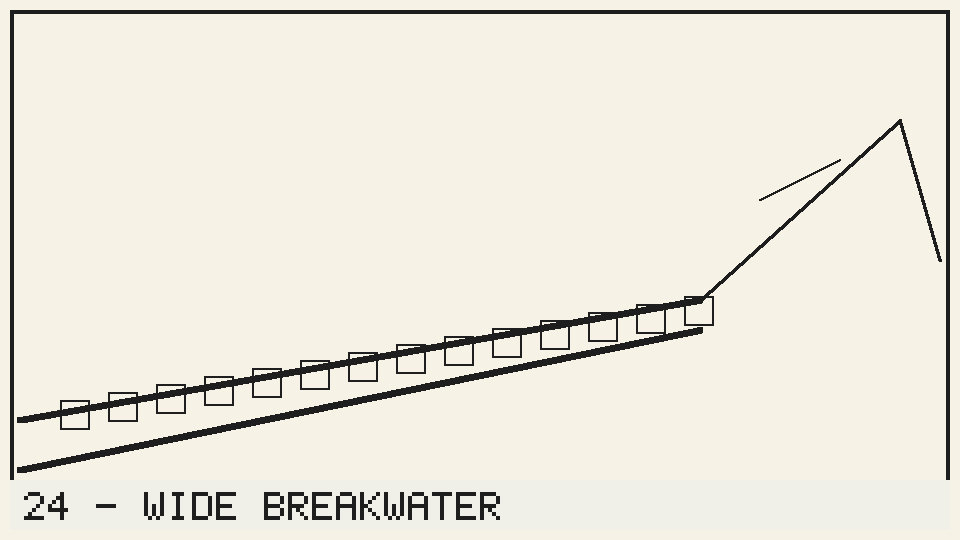

1Panel · Shot 118A

Extreme wideCrane downHigh
Appachan stands at the very end of the breakwater with the torch held high and shouts across the water to boats that are not there, while Suresh, soaked to the skin and out of breath, tries to reach him along the slippery concrete without losing the radio he is carrying under his jacket. The wave arrives early.
Sound: Wind and surf, a distant ship horn and the generator
Duration: 6s
Note: Keep the yellow safety line out of frame at all times; the real breakwater has a rail that must be painted out in post, so shoot a clean plate of the empty end before the crane moves in, and confirm the torch flicker rate with the DOP.